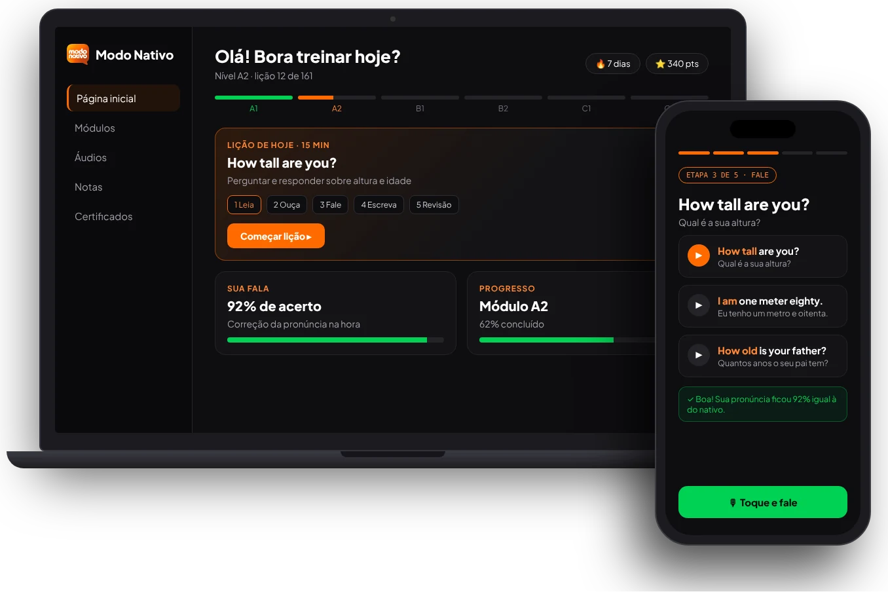
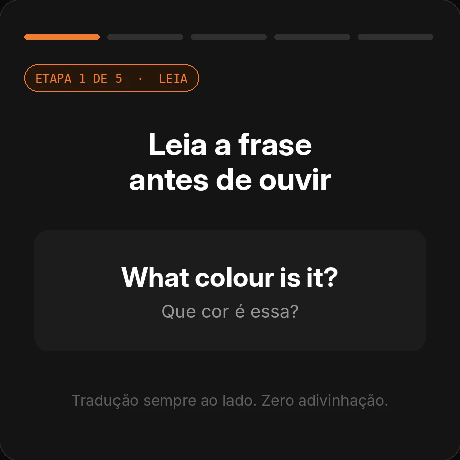

Fluency Planner
Saiba o que treinar a cada dia, com metas por nível e um checklist para manter a constância.
Sua rotina, organizada ↗Saia do “eu entendo, mas não consigo falar”. Treine com a técnica de Shadowing, do zero à conversação, em 15 minutos por dia.
Quero destravar meu inglês ↗Não falta vontade. Falta colocar a fala na sua rotina.
O próximo passo pode ser mais simples.
Ouvir, repetir e praticar. Um pouco, todos os dias.
Com o Shadowing, você ouve e repete a fala de um nativo,
treinando os sons, o ritmo e a entonação.
Nada de passar a aula inteira só assistindo. Você lê, ouve, fala, escreve e revisa. Um caminho claro para transformar estudo em prática.
Prazer em conhecer você.
161 lições, do A1 ao C2, organizadas por nível. Você avança no seu ritmo, acompanha sua evolução e recebe um certificado de curso livre a cada nível concluído.

Explore como funciona sua rotina de prática.
Conheça as frases e o vocabulário que você vai praticar. O inglês começa a fazer sentido em situações do dia a dia.
Imagem da plataforma Modo Nativo
Seis bônus para acompanhar sua jornada com o inglês.
Saiba o que treinar a cada dia, com metas por nível e um checklist para manter a constância.
Sua rotina, organizada ↗Um tutor com IA dentro da plataforma para tirar dúvidas, pedir exemplos e encontrar o próximo passo.
Disponível 24 horas ↗Treine situações de viagem, trabalho e entrevistas no ChatGPT, Claude ou Gemini.
Conversas com propósito ↗Monte seu currículo em português e inglês e baixe em PDF para a próxima oportunidade.
Seu próximo passo profissional ↗Travou? Receba dicas e pratique o exercício de outras formas, no ritmo que você precisa.
Apoio desde o início ↗Tem gente do outro lado. Tire dúvidas no fórum das lições ou pelo WhatsApp com um professor.
Gente ajudando gente ↗Pratique para participar das conversas e se preparar para novas oportunidades.
Treine as frases que você pode usar no aeroporto, no hotel e no restaurante.
Aproxime o inglês das séries, músicas e conversas que você já gosta.
Conheça os comentários enviados sobre o curso.
Caracaaa! Não tenho palavras para agradecer vocês! Fiquei na dúvida sobre a taxa, mas paguei e recebi o curso completo, do A1 ao C2, com todos os bônus prometidos. O conteúdo é muito bom! Obrigada de coração! 🥹
Paguei a taxa e recebi o curso completo com os materiais. Estou adorando essa técnica de aprender inglês com repetição! Já pratiquei tanto que agora consigo reconhecer nas séries e nos filmes o que aprendi nas aulas. Estou muito feliz! 🧡🙌 Thanks!!
Fiz a matrícula e recebi todo o material. Depois de 6 meses estudando, consegui meus certificados dos níveis Beginner e Elementary e coloquei no LinkedIn. Uma das empresas para as quais eu tinha me candidatado me contratou, e o curso fez diferença nessa conquista. Gratidão! 🙏
Eu precisava de um caminho para começar sem ficar perdida. Ter as lições organizadas e saber o que praticar a cada dia faz toda a diferença. 🧡
O que mais gostei foi colocar a fala em prática. Ouvir e repetir deixa o estudo mais dinâmico e dá vontade de continuar aprendendo! 🙌
Gostei de poder estudar no meu ritmo e voltar às lições quando preciso. Ter apoio para tirar dúvidas também ajuda muito. 🧡
Veja tudo que você vai receber:
12 meses de acesso · Do A1 ao C2
Por apenas 9x deou R$ 67,00 à vista
Quero começar agora ↗⌑ Pagamento pela Hotmart · Acesso por e-mailVocê tem 7 dias para testar. Se não for para você, solicite o reembolso dentro desse prazo e receba 100% do valor.
Sim. O curso começa no A1 e segue até o C2, com lições organizadas por nível. O Modo Guiado oferece dicas para quem precisa de mais apoio.
Você ouve uma frase em inglês e repete acompanhando o áudio, imitando ritmo, sons e entonação. No Modo Nativo, a prática faz parte de uma rotina com leitura, escuta, fala, escrita e revisão.
As lições foram pensadas para uma rotina de cerca de 15 minutos por dia. Você avança no seu ritmo; sua evolução depende da prática e da constância.
Você terá 12 meses de acesso. Depois da confirmação do pagamento, as instruções para entrar na plataforma chegam por e-mail.
Sim. Você recebe um certificado de curso livre a cada nível concluído. Ele não substitui exames internacionais de proficiência.
R$ 67,00 à vista ou 9 parcelas de R$ 8,80 no cartão (total de R$ 79,20). A compra é processada pela Hotmart; confira as opções disponíveis no checkout.
Você pode solicitar o reembolso em até 7 dias após a compra, conforme a garantia da oferta.
Comece com uma lição. Continue um pouco a cada dia.
Quero dar meu primeiro passo ↗